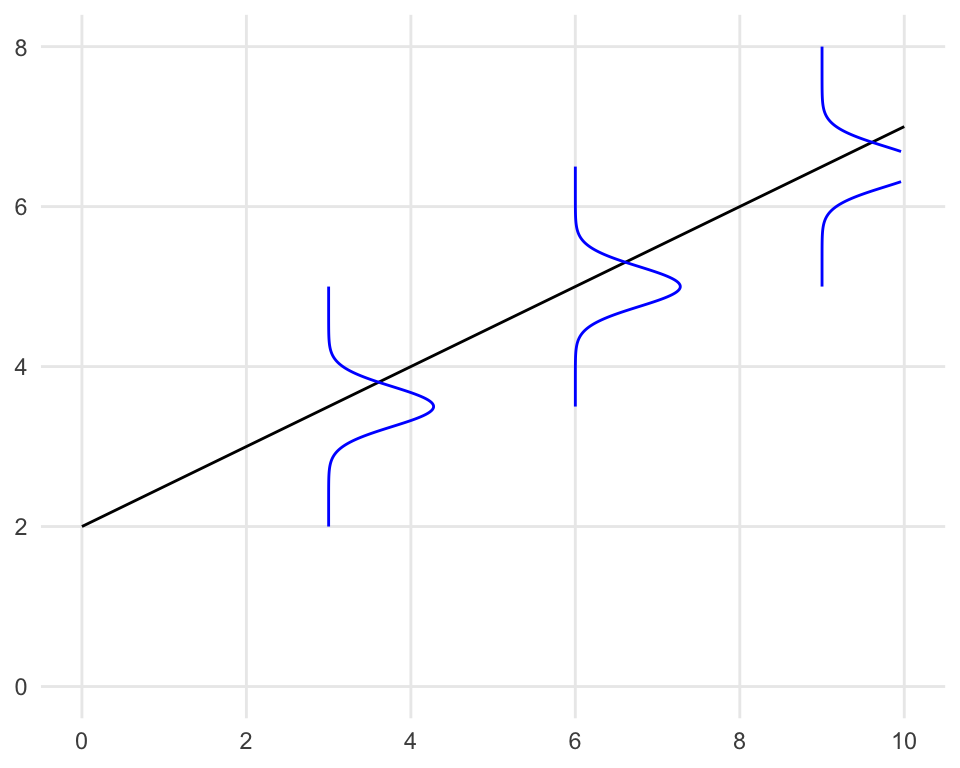

| index | father | son |
|---|---|---|
| 1 | 167.20 | 167.18 |
| 2 | 168.85 | 169.94 |
| 3 | 177.79 | 173.40 |
| 4 | 170.35 | 169.48 |
| 5 | 170.65 | 168.42 |
| 6 | 178.58 | 174.20 |
| 7 | 172.30 | 169.58 |
| 8 | 163.67 | 163.50 |
| 9 | 166.57 | 167.52 |
| 10 | 167.77 | 170.72 |
6 단순선형회귀모형 (simple linear regression model)
Acknowledgement: 본 절의 구성에는 다음 교재를 발췌하였다.
- 조정우 & 김현철 (2023), 교육통계학, 법문사.
- 강근석, 유현조 (2016). R을 활용한 선형회귀분석. 교우사.
6.1 회귀분석 개요
6.1.1 불완전한 관계의 분석
- 두 변수 사이의 관계를 나타내는 법
- 함수적 관계(functional relation): 한 변수의 값을 알면 다른 변수의 값이 정확히 결정되는 관계 e.g. 한 주차장의 (주차시간, 주차료)
- 통계적 관계(statistical relation): 한 변수에 대응되는 다른 변수의 값이 정확히 하나의 값으로 결정되지는 않는 관계 e.g. (교육비, 미래소득); (인센티브, 총득점); 또는 아래 표의 (아버지 키, 아들 키)
통계적 관계에서는 임의의 오차가 있다는 가정 하에 두 변수간의 관계를 확률 모형으로 나타낸다.
- 단순회귀모형(simple regression model): 설명변수(explanatory variable, predictor variable, independent variable \(X\)) 1개, 반응변수(response variable, dependent variable \(Y\)) 1개
- 다중회귀모형(multiple regression model) 혹은 중회귀모형: 설명변수 여러개, 반응변수 1개
단순선형회귀분석을 먼저 다룬 뒤 다중선형회귀분석을 다루도록 한다.
역사적 배경 (단어 ``회귀’’의 어원)
- 회귀(回歸)라는 용어는 영국의 생물학자 프랜시스 골턴(Francis Galton)이 아버지의 키와 아들의 키의 관계를 분석한 연구에서 처음 사용되었다.
- 골턴은 아들들의 키가 아버지들의 키를 닮아가는 경향과 함께, 전체 평균키로 회귀하는 현상을 발견하였다. 이를 ’평범으로의 회귀(regression towards mediocrity)’라고 설명했다.
6.2 모형 가정
- 단순선형회귀분석의 모형가정:
\[E(Y | X=x) = \alpha + \beta x. \tag{1}\]
즉, \(X=x\)에 대한 \(Y\)의 조건부 기댓값이 \(x\)의 선형식이라고 가정한다. 여기서 \(\alpha\)와 \(\beta\)는 알려지지 않은 모수(unknown true parameter)이다.
기울기항 \(\beta\)의 해석
- \(X\)가 연속형 확률변수의 경우: \(X\)가 1단위 증가할 때 \(Y\)의 평균 변화량
- \(X\)가 이진형 (0,1)인 경우: 기준 범주(0)에 대한 다른 범주(1)와의 평균 차이

- Equivalent definitions: 잡음(noise) 또는 오류(error)를 대표하는 확률변수 \(\epsilon\)를 도입하면 위 식 대신 아래 식으로 모형을 정의할 수 있다. \(\epsilon\)은 측정 오차나 모형에 포함되지 않은 다른 변수들의 영향을 나타낸다고도 할 수 있다. 1식과 2식은 동치이다.
\[Y = \alpha + \beta X + \epsilon, \qquad \mbox{where} \qquad E(\epsilon|X=x)=0 ~~~\mbox{for any}~~ x \tag{2}\]
- 용어들: 하나의 관찰된 자료점 \((x_i, y_i)\)은 아래와 같이 분해하여 생각할 수 있다.
- \(y_i\): 반응변수의 실제값(true value)
- (상수 \(a\), \(b\)가 주어졌을 때) \(\hat{y}_i := a + b x_i\): \(a\), \(b\)를 이용한 \(y_i\)의 예측값(predicted value) 또는 적합값(fitted value)이라 부른다. 또한 이 맥락에서 일차계수 \(b\)는 기울기(slope), 상수계수 \(a\)는 절편(intercept)이라 부른다.
- \(y_i - \hat{y}_i = y_i - (a + b x_i)\): 잔차(residual)
6.3 최소제곱법(least squares method)에 의한 모형계수의 추정:
- \(\{(X_i, Y_i)\}_{i=1}^n\)이 관찰된 자료점들이라 하자. 최소제곱법은 실제값과 예측값의 차이 (잔차; residual)의 제곱합을 최소화하는 \((\alpha, \beta)\)를 true \((\alpha, \beta)\)의 추정량으로 제안하는 방법이다.
\[(\hat{\alpha}, \hat{\beta}) = \underset{\alpha, \beta \in \mathbb{R}}{\rm argmin} \left[ \sum_{i=1}^n \{ Y_i - (\alpha + \beta X_i ) \}^2 \right]\]
이론적으로, 표본 \(\{(X_i, Y_i)\}_{i=1}^n\)이 \((X,Y)\)의 임의표본일 경우(즉 iid일 경우), 최소제곱법의 해는 모형가정의 true parameter \((\alpha, \beta)\)를 “가장 잘” 근사함이 알려져 있다.
최소제곱법을 풀어보자. \(\phi(\alpha, \beta) = \sum_{i=1}^n \{ Y_i - (\alpha + \beta X_i ) \}^2\)으로 두고 \(\nabla \phi(\alpha, \beta) = 0\)을 풀면 다음과 같이 \((\hat{\alpha}, \hat{\beta})\)의 closed-form solution을 얻을 수 있다:
\[\hat{\beta} = \frac{\sum_{i=1}^n (X_i - \bar{X})(Y_i - \bar{Y}) }{\sum_{i=1}^n (X_i - \bar{X})^2 } =: \frac{SS_{XY}}{SS_{XX}}\]
\[\hat{\alpha} = \bar{Y} - \hat{\beta} \bar{X}\]
- Comments
- 기울기의 추정량 \(\hat{\beta}\)는 표본(공)분산과 표본상관관계를 이용하여도 표현가능하다. \[\hat{\beta} = r_{XY} \frac{s_Y}{s_X}\] 여기서 \(r_{XY}\)는 \(X\)와 \(Y\) 간의 표본상관계수, \(s_X\)와 \(s_Y\)는 각각 \(X\)와 \(Y\)의 표본표준편차이다. 달리 말하면, 만약 \(X\)와 \(Y\)가 각각 표준화되어 있다면, \(\hat{\beta}\)값은 \(X\)와 \(Y\) 간의 표본상관계수와 정확히 일치한다.
- 최소제곱법으로 적합된 추세선의 방정식: \[y = \hat{\alpha} + \hat{\beta} x = \bar{Y} - r_{XY} \frac{s_Y}{s_X} ( x - \bar{X})\]
- 최소제곱법으로 적합된 추세선은 반드시 \((\bar{X}, \bar{Y})\)을 지난다.
- R에서는
lm()함수가 최소제곱법을 구현한다.
# 실습 목적으로 가상의 골턴 데이터 생성
set.seed(123)
n <- 100
father_height <- rnorm(n, 170, 5)
son_height <- 0.5 * father_height + rnorm(n, 85, 2)
# 모형 적합 및 결과 출력
model_galton <- lm(son ~ father, data = galton_data)
summary(model_galton)
Call:
lm(formula = son ~ father, data = galton_data)
Residuals:
Min 1Q Median 3Q Max
-3.815 -1.367 -0.175 1.161 6.581
Coefficients:
Estimate Std. Error t value Pr(>|t|)
(Intercept) 88.36246 7.28966 12.12 <2e-16 ***
father 0.47901 0.04275 11.21 <2e-16 ***
---
Signif. codes: 0 '***' 0.001 '**' 0.01 '*' 0.05 '.' 0.1 ' ' 1
Residual standard error: 1.941 on 98 degrees of freedom
Multiple R-squared: 0.5616, Adjusted R-squared: 0.5571
F-statistic: 125.5 on 1 and 98 DF, p-value: < 2.2e-16ggplot라이브러리는 산점도 및 추세선을 간단하게 시각화할 수 있다.
# 산점도 및 회귀선 그리기
ggplot(galton_data, aes(x = father, y = son)) +
geom_point(alpha = 0.5) +
geom_smooth(method = "lm", se = TRUE, color = "red") +
geom_hline(yintercept = mean(son_height), linetype = "dashed", color = "blue") +
geom_vline(xintercept = mean(father_height), linetype = "dashed", color = "blue") +
labs(x = "Father's height", y = "Son's height", title = "Simulated data for Golton's height study") +
theme_minimal()6.4 예측오차(잔차)와 결정계수
6.4.1 결정계수 \(R^2\)
- 아래 그림을 보자. 관찰값 \(Y_i\)는 세 부분으로 나누어 생각할 수 있다.
\[Y_i = \underbrace{\bar{Y}}_{\rm (i)} + (\underbrace{\hat{Y}_i - \bar{Y}}_{\rm (ii)}) + (\underbrace{Y_i - \hat{Y}_i}_{\rm (iii)})\]
- (i): \(Y\) 변수의 대푯값 (설명변수가 하나도 없을 때 \(Y\)에 대한 자연스러운 예측값)
- (ii): 회귀등식 기반의 \(Y\) 예측값 (설명변수가 있을 때 \(Y\)에 대한 자연스러운 예측값)과 (i)의 차이
- (iii): 잔차, 실제값과 (ii)의 차이
- (i)를 좌변으로 옮기면 아래와 같이도 생각할 수 있다.
\[\underbrace{Y_i - \bar{Y}}_{\mbox{편차}} = (\underbrace{\hat{Y}_i - \bar{Y}}_{\mbox{예측(설명)되는 부분}}) + (\underbrace{Y_i - \hat{Y}_i}_{\mbox{예측(설명)되지 않는 부분}})\]
- 특별히 위 식들의 제곱합들은 아래처럼 분해가능한 성질이 있다.
\[\underbrace{\sum_{i=1}^n (Y_i - \bar{Y})^2 }_{\mbox{SST}} = \underbrace{\sum_{i=1}^n ( \hat{Y}_i - \bar{Y} )^2 }_{\mbox{SSR}} + \underbrace{\sum_{i=1}^n (Y_i - \hat{Y}_i)^2}_{\mbox{SSE}}\]
- 결정계수(coefficient of determination): 응답변수의 총 제곱합 중 회귀모형에 의해 설명된 제곱합의 비율. 모형의 적합 정도를 평가하는 지표 중 하나이다.
\[R^2 := \frac{SSR}{SST} = 1 - \frac{SSE}{SST}\]
만약 자료점이 선형에 가깝다면 추세선 근처에 점들이 분포해 있을 것이므로, \(SSE\)가 거의 0에 가까울 것이다 (즉 \(R^2 \approx 1\)). 한편, 자료점에 선형경향이 없고 백색잡음처럼 보인다면, \(SSE\)가 \(SSR\)에 비해 상대적으로 매우 클 것이고, 그렇다면 (즉 \(R^2 \approx 0\))을 예상할 수 있다.
Fact: \(R^2\)은 \(X\)와 \(Y\) 간의 표본상관계수의 제곱과 동일함을 수학적으로 유도할 수 있다.
### 아래 값이 `summary` 결과의 `R-square`와 일치하는지 확인해 보라.
r = cor(galton_data$father, galton_data$son)
print(r^2)[1] 0.56160426.5 회귀모형에서의 통계적 추론
6.5.1 회귀분석(기반의 통계적 추론)을 위한 가정
최소제곱추정량 \(\hat{\alpha}\)과 \(\hat{\beta}\)을 이용하여 true \(\alpha\), \(\beta\)에 대한 통계적인 추론(e.g. 신뢰구간, 가설검정)을 하기 위하여는, (1), (2)식의 선형추세 가정에 더하여, 오차항에 관련된 더 강화된 가정이 필요하다.
강화된 모형 가정:
\[Y_i = \alpha + \beta X_i + \epsilon_i, \tag{3}\] where (추가 가정들)
- \(\mathbf{X}_1, \ldots, \mathbf{X}_n\)’s are iid, or deterministic.
- (signal과 noise 간의 독립) \(\epsilon_i \perp \mathbf{X}_i\) for each \(i=1,\ldots,n\).
- \(E(\epsilon_i)=0\).
- (오차항 간의 독립성) \(\epsilon_1, \ldots, \epsilon_n\) are iid.
- (오차항의 등분산성) \(\mathbb{V}(\epsilon_i)=\sigma^2\) for all \(i\).
- (오차항의 정규성) \(\epsilon_i\) follows normal distribution for all \(i\).
조건 3-6은 요약하여 아래와 같이 표기하기도 한다:
\[\epsilon_i \stackrel{\rm iid}{\sim} N(0, \sigma^2), ~~i=1, \ldots, n. \tag{4}\]
6.5.2 회귀모형에서의 통계적 추론 관련 주요 결과
통계적 추론의 관심사는 다음과 같다.
- 모형 계수 \(\alpha\), \(\beta\) 관련
- \(\hat{\alpha}\), \(\hat{\beta}\)의 분산
- \(\alpha\), \(\beta\)의 신뢰구간
- 귀무가설 \(H_0: \alpha = 0\) 및 검정 결과, \(H_0: \beta = 0\)의 신뢰구간
- \(X=x_0\)가 주어졌을 때의 예측값 \(f(x_0) := E(Y|X=x_0) = \alpha + \beta x_0\) 관련
- 적합된 예측값 \(\hat{f}(x_0) := \hat{E}(Y|X=x_0) := \hat{\alpha} + \hat{\beta} x_0\)의 분산
- 예측값 \(E(Y|X=x_0) = \alpha + \beta x_0\)의 신뢰구간
아래 결과들을 이용해 위의 통계적 추론을 수행한다. 자세한 수식은 다중회귀분석에서 소개코자 한다. notation의 편의상 \((\alpha, \beta) =: \boldsymbol{\theta}\)라 하자.
(비편향성) 가정 (i)-(iii)가 성립하면 \(E(\hat{\boldsymbol{\theta}}) = \boldsymbol{\theta}\)이다.
(일치성) 가정 (i)-(iv)가 성립하면 \(n\rightarrow\infty\)일 때 \(\hat{\boldsymbol{\theta}}\)가 true \(\boldsymbol{\theta}\)로 수렴한다.
(근사 정규성) 가정 (i)-(v)가 성립하면 \(n\rightarrow\infty\)일 때 \(\hat{\boldsymbol{\theta}}\)가 근사적으로 다변량 정규분포 \(N( \boldsymbol{\theta}, \sigma^2 (\mathbb{X}^T\mathbb{X})^{-1})\)을 따른다. 여기서 \(\mathbb{X}\)는 다음과 같이 정의된 \(n\) by \(2\) 행렬이다:
\[\mathbb{X} = \begin{bmatrix} 1 & X_1 \\ 1 & X_2 \\ 1 & X_3 \\ \vdots & \vdots \\ 1 & X_n \end{bmatrix}.\]
(정규성) 가정 (i)-(vi)가 성립하면 \(n\)에 상관없이 \(\hat{\boldsymbol{\theta}}\)가 다변량 정규분포 \(N( \boldsymbol{\theta}, \sigma^2 (\mathbb{X}^T\mathbb{X})^{-1})\)을 따른다.
오차의 분산 \(\sigma^2\)의 추정: 아래처럼 평균 잔차(mean-squared error)를 정의하자.
\[MSE := \frac{SSE}{n - 2} = \frac{\sum_{i=1}^n (Y_i - \hat{Y}_i)^2}{n - 2} = \frac{\sum_{i=1}^n (Y_i - (\hat{\alpha} + \hat{\beta} X_i)^2}{n - 2}\]
\(MSE\)는 (i)-(v) 가정 하에서 \(MSE \rightarrow \sigma^2\) as \(n \to \infty\)이며, (i)-(iv) 가정 하에서 \(E(MSE) = \sigma^2\)이다.